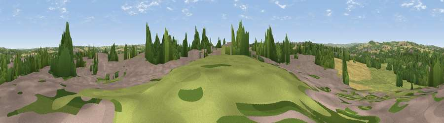

Viewpoint near Middlecroft
#36123 in England · top 71% of its area beats it · near Middlecroft · access?Where it is
The exact computed spot (SK 42575 74075). Click the marker for map links.
Public access: no public right of way or access land is recorded at this exact spot — it may be on private land. Computed from Natural England's CRoW access layer and OpenStreetMap rights of way — not the legal definitive map. Always verify locally.
The view, rendered

A 360° render of this exact spot computed from the terrain model, tree cover and land cover — summer colours, afternoon light, calibrated against photographs of famous viewpoints. Real trees, hedges and buildings will differ in detail.
The panorama
Grey silhouette: terrain skyline in each direction (720 bearings, Earth curvature and refraction included). Dashed green: skyline with trees (+15 m) and buildings (+8 m) as obstacles. Blue strip: how far the ground is visible on each bearing.
Where the view opens
Wedge length = distance to the farthest visible ground on that bearing (vegetation-aware). Rings at 10, 25 and 50 km.
What fills the view
30% grassland · 28% woodland · 23% built-up · 19% cropland
Angular shares of the visible panorama (visual magnitude), not map area. Landscape diversity 0.61 (0–1 Shannon).
Key numbers
More beautiful places nearby
The staircase of upgrades: each row has a higher view potential than everything closer. Driving times are estimates from straight-line distance, calibrated against real road routing — check an actual route before setting out.
| Place | Direction | Drive | Score |
|---|---|---|---|
| Viewpoint near Duckmanton | SE · 2 km | ~5 min | 44.5 |
| Viewpoint near Shuttlewood | ESE · 4 km | ~8 min | 53.3 |
| Viewpoint near Hundall | WNW · 5 km | ~10 min | 54.1 |
| Viewpoint near Bolsover | SE · 5 km | ~12 min | 60.4 |
| Viewpoint near Ridgeway | NNW · 9 km | ~17 min | 67.6 |
| Viewpoint near Alton | SSW · 12 km | ~23 min | 67.7 |
| Viewpoint near Holmesfield | WNW · 14 km | ~26 min | 69.4 |
| Viewpoint near Hathersage | WNW · 20 km | ~33 min | 70.9 |
53.26197, -1.36320 · source: screening · position refined by local search. Computed location — check access rights before visiting.